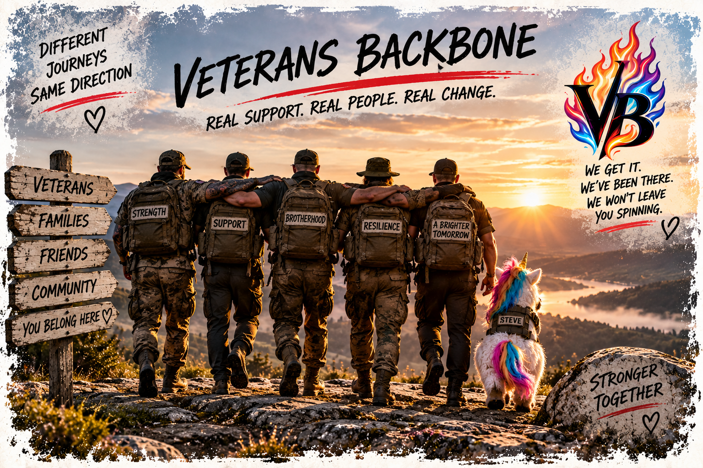
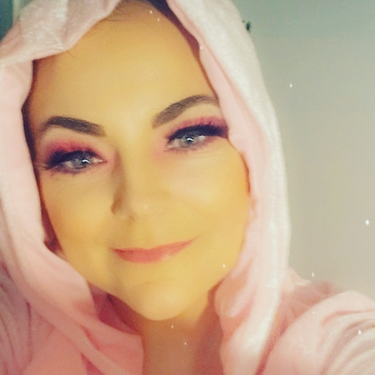

Support Team
People who understand that support shouldn't be a conveyor belt. No support workers have been appointed to deliver VB services yet.
Different backgrounds.
Different experiences.
Different journeys.
Same basic belief: people deserve to be treated like people.
No faceless organisation nonsense.
Veterans Backbone is still being established. The people shown here are part of the project's development story, not a fully operational support team.


Veterans Backbone began with a simple frustration: support systems too often forget there's an actual human being standing in front of them.
Shelley is developing VB around a simple idea: support should fit the person, not force the person to fit the system.
That means listening properly, being honest about what can and cannot be done, challenging nonsense when necessary and staying human while doing it.
Shelley has never served in the Armed Forces. She isn't a veteran and would never claim military experiences she hasn't had.
Her motivation comes from battles of a different kind: serious illness, trauma, rebuilding and dealing with systems that don't always join up.
Those experiences aren't the same as military service. But knowing what it's like to fight to be heard is part of why she wants to build something useful alongside veterans.
Same scars.
Different battlefield.
Veterans Backbone was never meant to become another organisation that looks impressive on paper and forgets why it exists.
I haven't worn the uniform. I haven't walked in your boots. But I've fought my own battles, and I know what it's like to need somebody who actually gives a shit.
You don't have to have worn the uniform to care about the person who did.
I want veterans' experiences and voices to be at the heart of what we build.
And if we ever become more interested in process than people, somebody please give us a very firm kick up the arse.
— Shelley
Steve does not technically have a job title.
That has never stopped him from appearing everywhere, wearing sunglasses, stealing attention and somehow becoming part of the furniture.
Somewhere along the way, he also became a reminder that recovery is allowed to include humour, ridiculousness and things that have absolutely nothing to do with surviving.
He is not available for meetings.

Veterans Backbone isn't operational yet. We're not filling the page with invented people, appointments or job titles just to look bigger.
Our first aim is to establish an appropriately funded community-based veteran support role. Other roles can follow when there's a genuine need and the resources to support them.
People who understand that support shouldn't be a conveyor belt. No support workers have been appointed to deliver VB services yet.
People who could help create connection, belonging and the future RV Crew.
Added when there's a real role, a real person and an actual reason for them to be here.
Whoever joins Veterans Backbone in the future, the expectation will be the same: listen, communicate, respect boundaries, treat people properly and don't disappear when things become inconvenient.
We want military lived experience and civilian expertise to work together without pretending they're identical.
Human first. Always.
We're still building the foundations. You can read about our future support plans or get in touch with general questions about the project.
We are not yet a registered charity and are not currently accepting individual support cases.